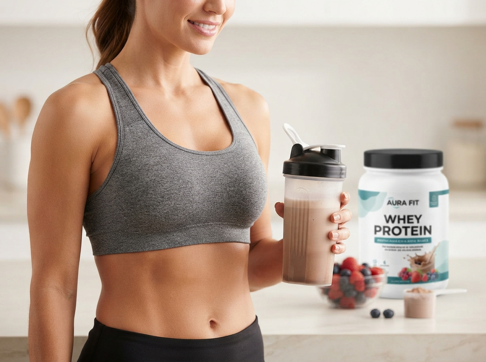
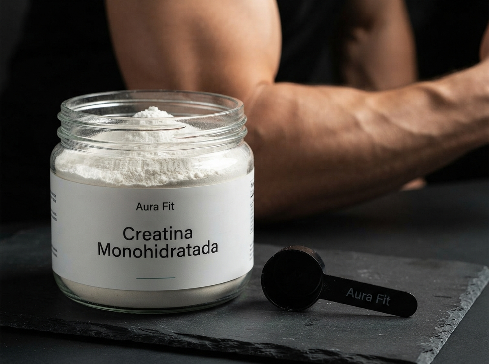
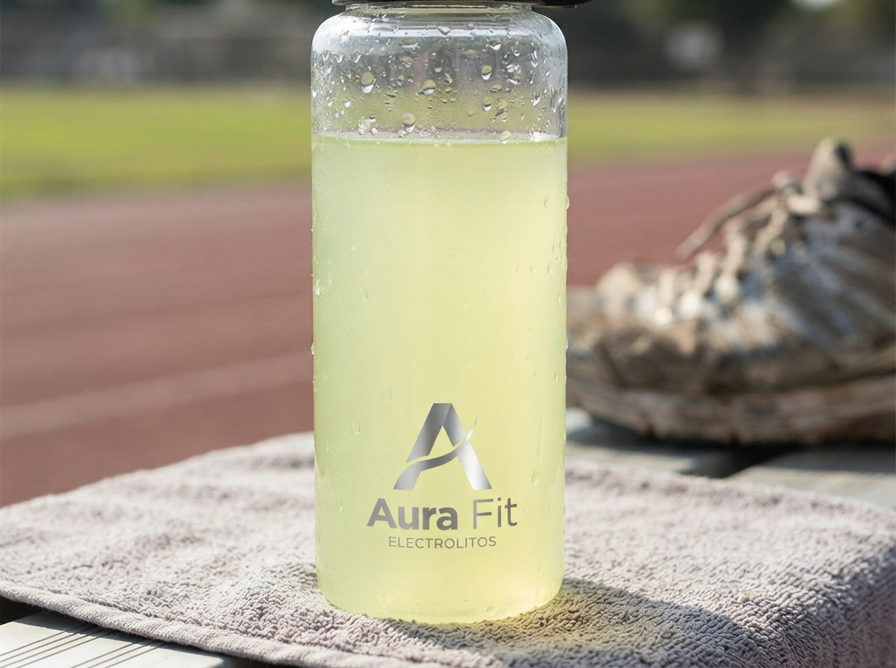

Optimiza tu rendimiento y recuperación con los nutrientes adecuados. Selecciona la guía que deseas explorar:

Suplementación Básica
Descripción: Todo lo que necesitas saber sobre la proteína de suero de leche: cuándo tomarla, cuánta necesitas y cómo elegir la mejor opción para tus objetivos de tonificación o aumento de masa muscular.
Leer Guía Completa →
Rendimiento & Fuerza
Descripción: Desmitificamos la creatina. Entiende cómo este suplemento ayuda a tus músculos a producir energía durante ejercicios de alta intensidad, mejorando tu fuerza y volumen de entrenamiento de forma segura.
Leer Guía Completa →
Salud & Resistencia
Descripción: El agua no es suficiente si entrenas intenso. Aprende por qué reponer sodio, potasio y magnesio es vital para evitar calambres, mantener el rendimiento y acelerar la recuperación.
Leer Guía Completa →